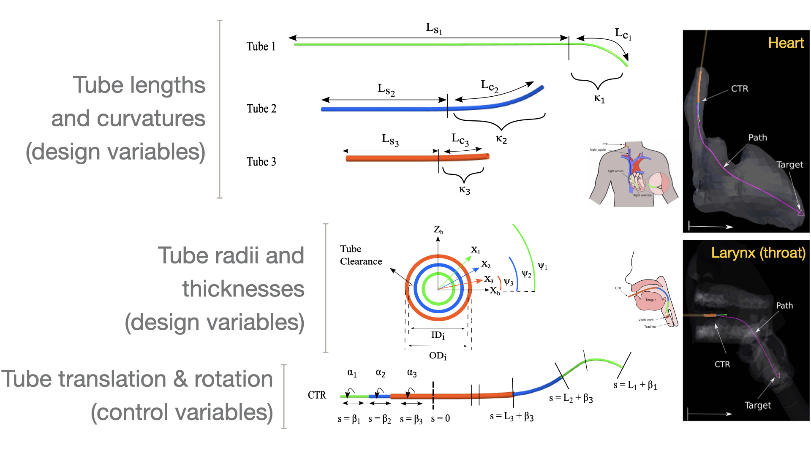
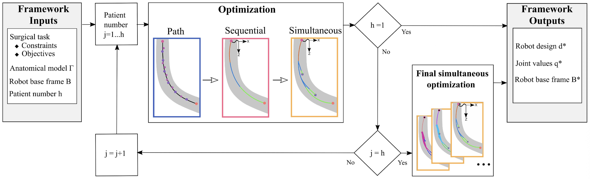

We apply gradient-based design optimization to concentric tube robots for minimally invasive surgery. Tube geometry and deployment motions must work together to reach a surgical target within a constrained anatomy; designing them jointly also makes it possible to seek one robot design for several patients.
Sharing a design across anatomies
The framework differentiates a bending-and-torsion kinematic model and jointly optimizes tube dimensions, joint motions, and robot base frames. Simulated laryngoscopy and myocardial-biopsy examples demonstrate patient-specific designs; a three-anatomy biopsy case finds one shared tube design with separate motion plans, using 212 optimization variables and 146 constraints.
Paper: Lin et al. [1]




Optimization problem
| Formulation element | Path | Sequential | Simultaneous |
|---|---|---|---|
| Case | Concentric-tube robot design and motion planning; Table II's three optimization stages, evaluated with 25 B-spline control points (c), 3 tubes (n), 10 waypoints (b), and 1 patient (h). The tip-orientation constraint applies to myocardial biopsy. | ||
| Objective | Minimize f1 (Eq. 12), balancing anatomical clearance and even spacing along the path. | Minimize f (Eq. 15) for each waypoint in sequence to initialize the simultaneous problem. | Minimize f (Eq. 15), summing the objective terms across all waypoints with one shared tube design. |
| Design variables | |||
| B-spline path control-point coordinates, cp | 75 | — | — |
| Inner diameter, IDi (0–3.5 mm; innermost diameter fixed) | — | 2 | 2 |
| Outer diameter, ODi (0–3.5 mm) | — | 3 | 3 |
| Curved-section length, Lci (≥ 0 mm) | — | 3 | 3 |
| Straight-section length, Lsi (≥ 0 mm) | — | 3 | 3 |
| Tube curvature, κi (≥ 0 mm⁻¹) | — | 3 | 3 |
| Tube rotation at tip, φi (rad; no stated bounds) | — | 3 | 30 |
| Tube translation, βi (≤ 0 mm) | — | 3 | 30 |
| Robot base frame, B (3-D position and orientation) | — | 6 | 6 |
| Total design variables | 75 | 26 | 80 |
| Design-variable count note | c × 3 coordinates, with c = 25. | One waypoint at a time; n − 1 inner diameters, n in each other tube-variable group, and 6 base-frame variables. | Rotations and translations each have b × n × h variables; base frames have 6 × h. Tube geometry is shared. Here b = 10, n = 3, and h = 1. |
| Constraints | |||
| Start-point coordinates, sp | 3 | — | — |
| Final-point coordinates, fp | 3 | — | — |
| Tube clearance, IDi − OD(i−1) (0.1–0.16 mm) | — | 2 | 2 |
| Tube wall thickness, (ODi − IDi)/2 (≥ 0.05 mm) | — | 3 | 3 |
| Distal exposed length, (Li + βi) − (L(i−1) + β(i−1)) (≥ 0 mm) | — | 2 | 20 |
| Proximal exposed length, βi − β(i+1) (≤ 0 mm) | — | 2 | 20 |
| Nitinol material strain, εi (0–0.08) | — | 6 | 6 |
| Biopsy tip orientation, tw × tr = 0 | — | 1 | 1 |
| Total constraints | 6 | 16 | 52 |
| Constraint count note | — | Table II counts 2 material-strain checks per tube and 1 tip-orientation constraint; objective penalties are not counted as explicit constraints. | Each exposed-length group has b × (n − 1) × h constraints; strain has n × h × 2 and tip orientation has h, following Table II's counting convention. |
| Models and conditions | Coupled tube bending and torsion with backbone reconstruction; 50-link discretization, nitinol (E = 80 GPa, strain limit 0.08), and no friction or external loading. The original OpenMDAO-based Ozone implementation integrates the kinematics with Lobatto2; OpenMDAO computes derivatives for SNOPT. For the myocardial-biopsy example, the innermost diameter is fixed at 0.6 mm and is excluded from the design-variable count. Unspecified bounds in Table II remain unspecified here; variable bounds are not added to constraint totals. | ||
| Representative source | A Generalized Framework for Concentric Tube Robot Design Using Gradient-Based Optimization | ||
| Source locator | Table II, printed page 3784 (PDF page 11); objective definitions in Eqs. (12)–(15), pages 3781–3782; myocardial-biopsy conditions in Section V-B, page 3786. | ||
References
- Jui-Te Lin, Cedric Girerd, Jiayao Yan, John T. Hwang, Tania K. Morimoto. A Generalized Framework for Concentric Tube Robot Design Using Gradient-Based Optimization. IEEE Transactions on Robotics, 2022.DOIPDF
@article{lin2022generalized, author = {Jui-Te Lin and Cedric Girerd and Jiayao Yan and John T. Hwang and Tania K. Morimoto}, title = {A Generalized Framework for Concentric Tube Robot Design Using Gradient-Based Optimization}, journal = {IEEE Transactions on Robotics}, year = {2022}, volume = {38}, number = {6}, pages = {3774-3791}, doi = {10.1109/tro.2022.3180627}, url = {https://doi.org/10.1109/tro.2022.3180627}, note = {Metadata verification: Crossref DOI} }
Research connections